.jpg){kind=link}


.jpg){kind=link}


Port Louis
Labourdonnais Waterfront Hotel
A Port Louis hotel on the Caudan Waterfront, with rooms and suites, harbour views, restaurants, an outdoor pool, and a spa and fitness centre.
Check roomsOfficial hotel website · opens in a new tab
Africa / A place to get to know
Island lagoons, forest trails and the flavours of Port Louis

Welcome to Mauritius
Mauritius pairs Indian Ocean lagoons with forested uplands, volcanic scenery and a capital shaped by migration. In Port Louis, markets and museums connect the island's food, trading history and diverse communities.
Explore a little further
Landmarks, landscapes and the stories behind them. Select a photograph for a closer look.
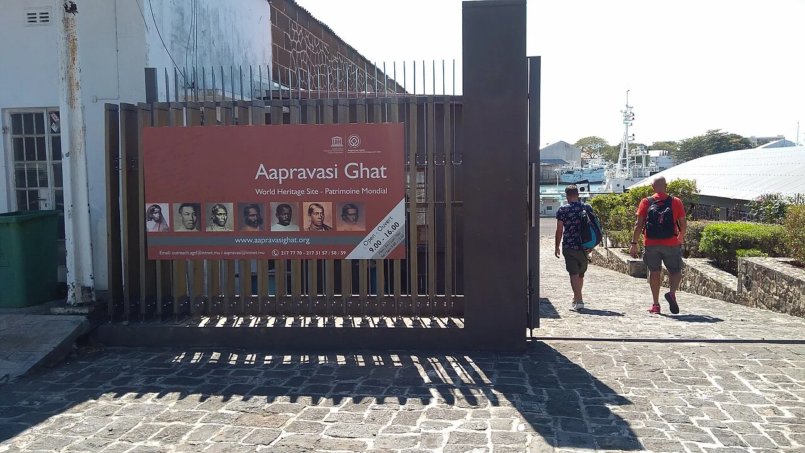
This former immigration depot in Port Louis records the arrival of indentured labourers, mainly from India. Its surviving buildings and interpretation help explain a major chapter of Mauritian history.
आशीष भटनागर · CC BY-SA 3.0 . Resized as needed and converted to WebP. No crop.
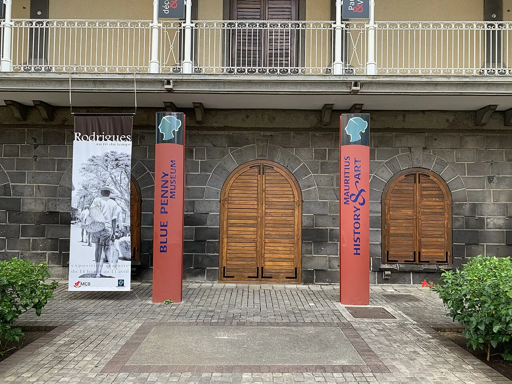
At Le Caudan Waterfront, this museum explores Mauritian art and history. Its celebrated collections include rare nineteenth-century Post Office stamps, alongside material about the island's past.
Benoît Prieur · CC0 . Resized as needed and converted to WebP. No crop.
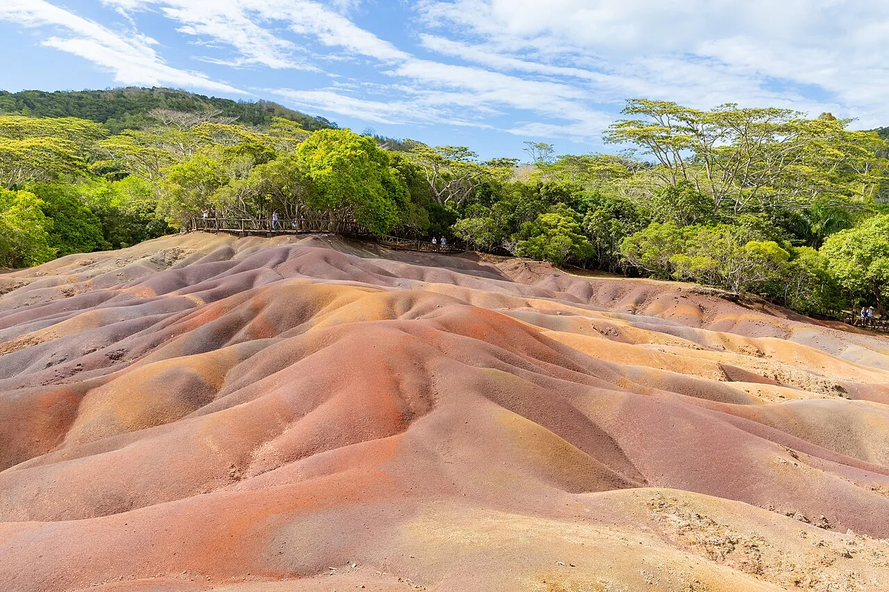
At Chamarel, exposed dunes display bands of red, violet, brown and other colours. Viewing this compact geological landscape offers a different perspective on the island's volcanic terrain.
"dronepicr" · CC BY 2.0 . Resized as needed and converted to WebP. No crop.
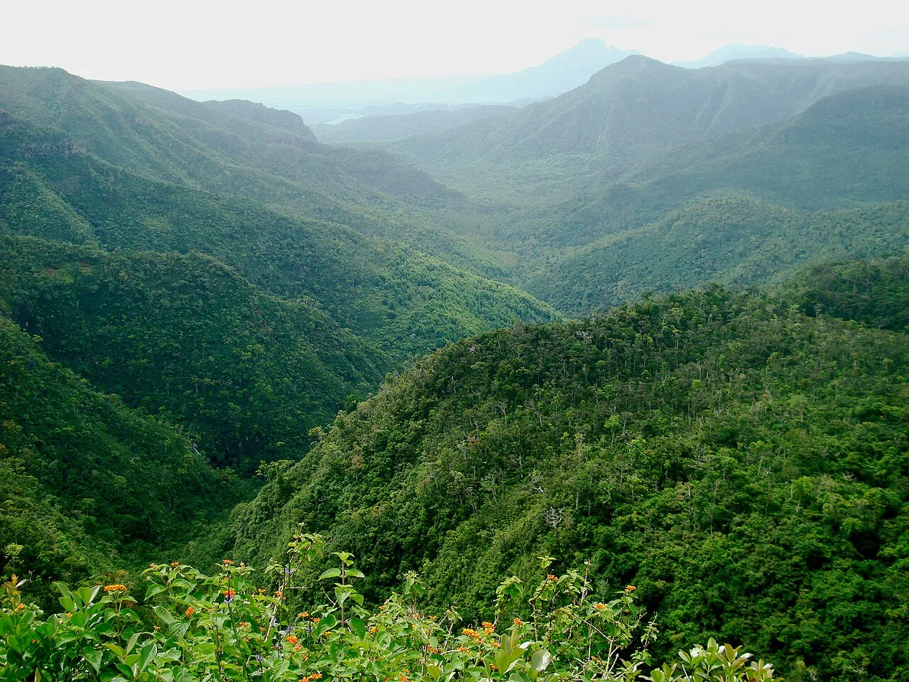
Forested hills, deep valleys and waterfalls define this protected area in southwest Mauritius. Trails and viewpoints introduce native plants and rare birds, including species found only on the island.
Adamina · CC BY 2.0 . Resized as needed and converted to WebP. No crop.
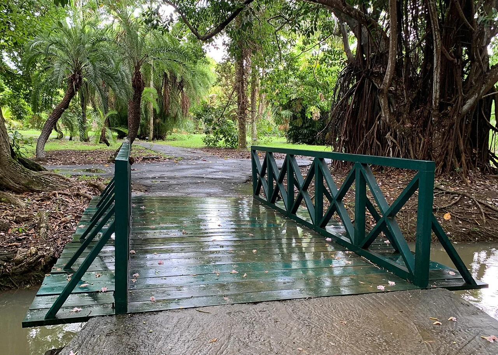
In Pamplemousses, this historic garden is known for palms and its pond of giant Amazon water lilies. Native and introduced plants reflect a long history of botanical collection.
Benoît Prieur · CC0 . Resized as needed and converted to WebP. No crop.
Explore a little further
Sega music and dance carry the island's Creole heritage, while Port Louis's Chinatown reflects generations of Sino-Mauritian life. Markets bring the island's languages and food traditions together.
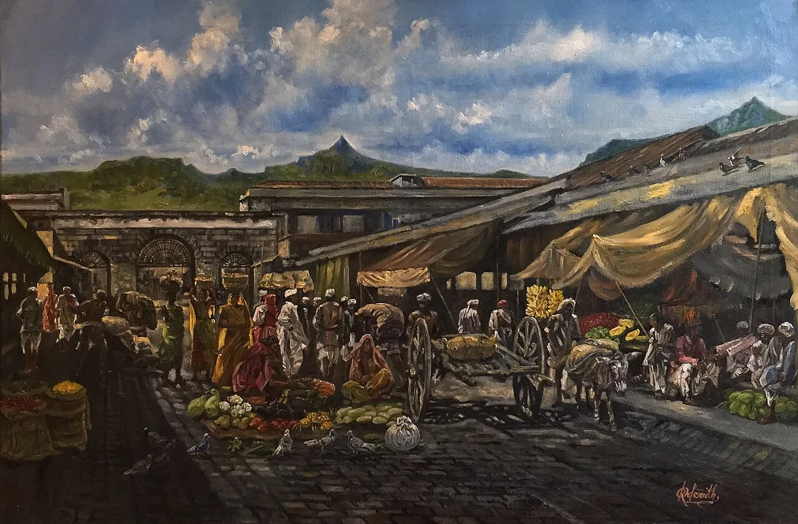
Central Market, Port Louis
Oderuth · CC BY-SA 4.0 . Resized as needed and converted to WebP. No crop.
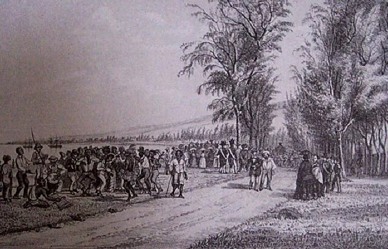
Sega music (Mauritius)
Oti nord · CC BY-SA 3.0 . Resized as needed and converted to WebP. No crop.
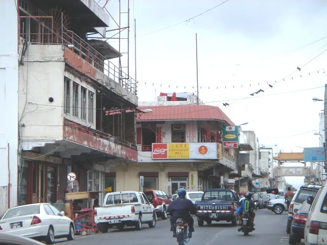
Chinatown, Port Louis
User: (WT-shared) Shoestring at wts wikivoyage · Public domain . Resized as needed and converted to WebP. No crop.
Explore a little further
Mauritian cooking draws on Indian, African, Chinese and European influences, from split-pea snacks to curries and bakery sweets.
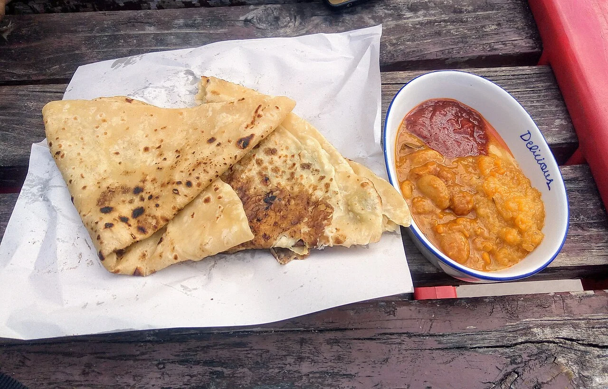
Dholl puri is a thin flatbread filled with ground yellow split peas, usually served with savoury curries, chutney and pickles.
Suyash.dwivedi · CC BY-SA 4.0 . Resized as needed and converted to WebP. No crop.
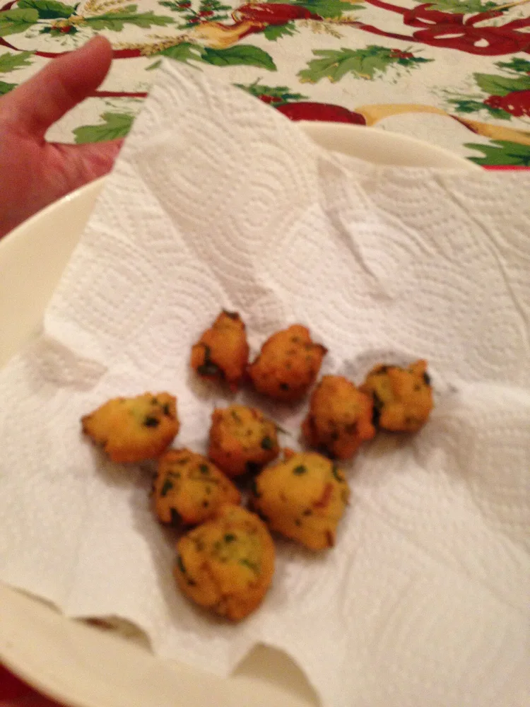
Gâteau piment are crisp split-pea fritters seasoned with chilli and herbs.
Alan Myers · CC BY 2.0 . Resized as needed and converted to WebP. No crop.
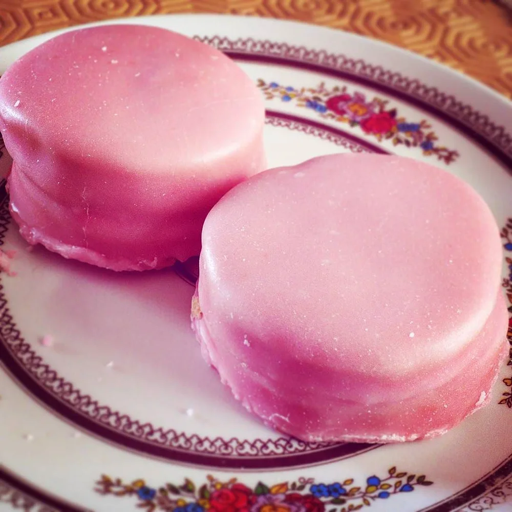
A napolitaine sandwiches jam between two shortbread biscuits beneath a layer of icing.
Rishi Luchun · CC BY 2.0 . Resized as needed and converted to WebP. No crop.
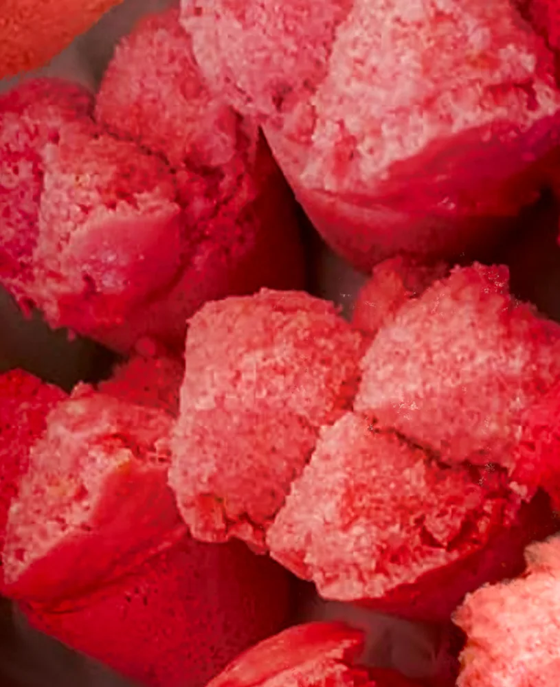
Poutou Chinois is a traditional steamed cake found in Sino-Mauritian bakeries, often associated with festive sweets.
Gyuli Gula · CC BY-SA 4.0 . Resized as needed and converted to WebP. No crop.
Explore a little further
Explore coral gardens, mountain scenery and conservation reserves across the island.
Explore the marine park's coral and fish on an authorised glass-bottom boat trip or guided snorkelling outing, respecting the protected reef.
Digiweb.ch · CC BY-SA 4.0 . Resized as needed and converted to WebP. No crop.
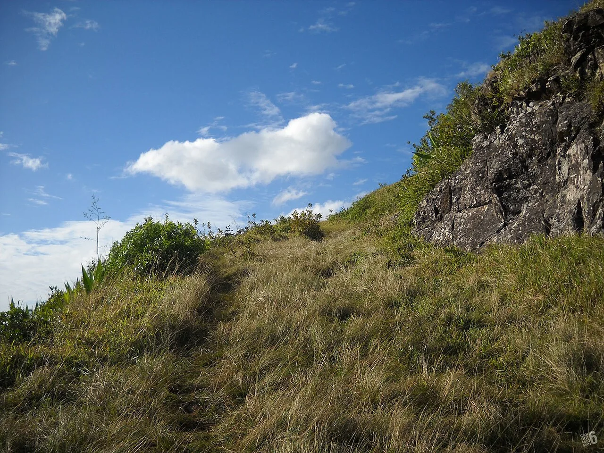
Hike the thumb-shaped mountain for views across Port Louis and the surrounding landscape, choosing a route suited to the rocky terrain and current conditions.
carrotmadman6 from Mauritius · CC BY 2.0 . Resized as needed and converted to WebP. No crop.
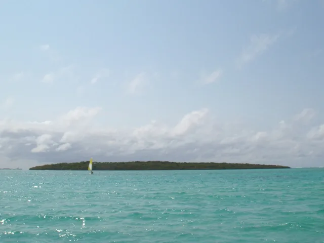
Join a guided conservation visit to this offshore nature reserve to learn about restored ebony forest and rare Mauritian plants and birds.
User: (WT-shared) Shoestring at wts wikivoyage · CC BY-SA 4.0 . Resized as needed and converted to WebP. No crop.
Explore a little further
Port Louis's waterfront offers evening dining and harbour views, while the island's music traditions add rhythm to a night out.
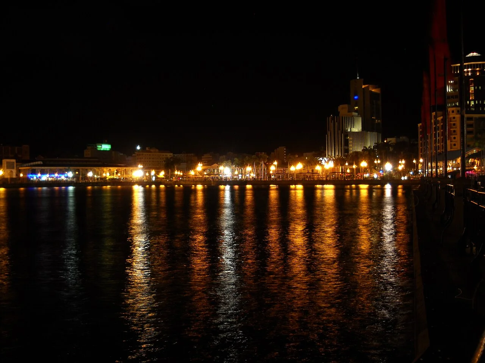
Port Louis Waterfront
carrotmadman6 from Mauritius · CC BY 2.0 . Resized as needed and converted to WebP. No crop.
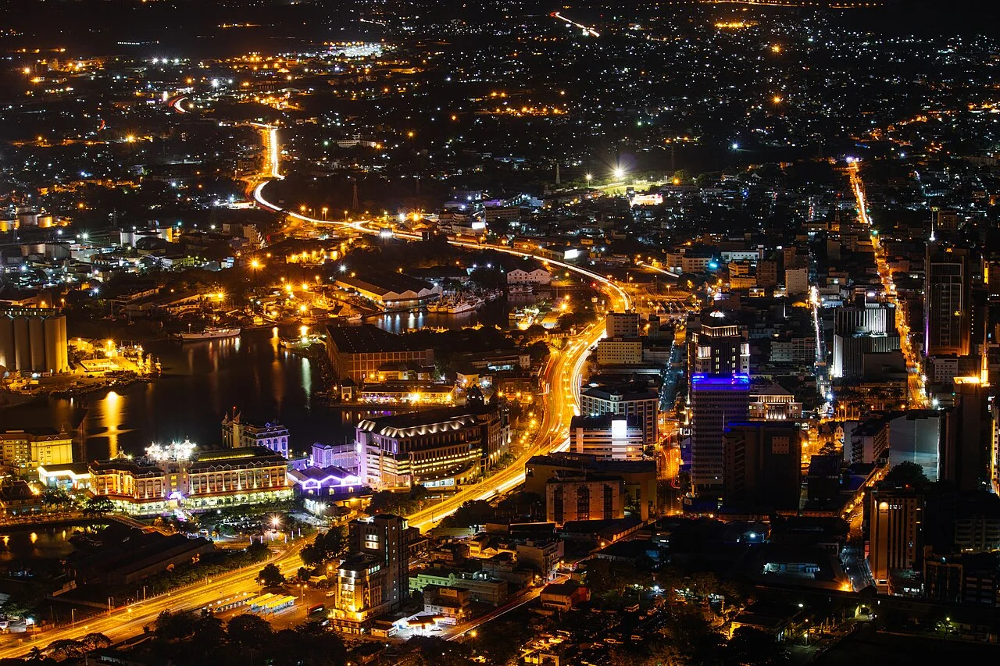
Port Louis at night
carrotmadman6 · CC BY 2.0 . Resized as needed and converted to WebP. No crop.
Explore a little further
A country overview with selected attraction markers. Use local transport information to plan the route between regions.
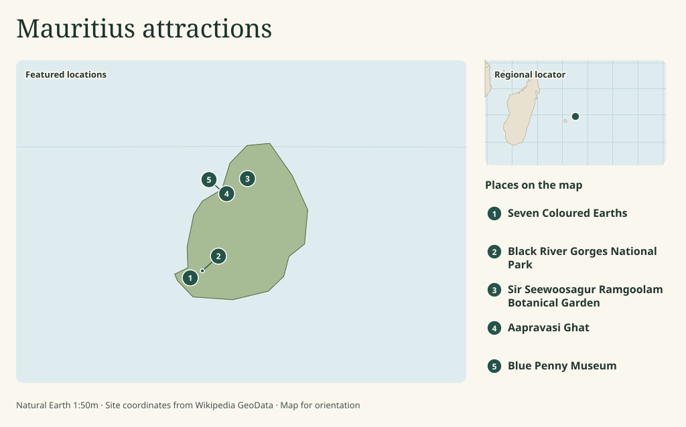
Illustrative overview. Marker locations and map sources are documented below.
A place to settle in
Two places to consider for your trip. Check room choices, current prices and availability directly with each hotel.
Port Louis
A Port Louis hotel on the Caudan Waterfront, with rooms and suites, harbour views, restaurants, an outdoor pool, and a spa and fitness centre.
Check roomsOfficial hotel website · opens in a new tab
Port Louis
A Port Louis hotel overlooking the Caudan Waterfront marina, with nautical-themed rooms, restaurants, a swimming pool, and a wellness club near the city centre.
Check roomsOfficial hotel website · opens in a new tab
The hotel sets its prices, booking terms and payment currency. Some properties confirm reservations after an enquiry.
Know your money
Get familiar with the local currency and estimate what an amount in your own currency is worth.
Daily reference Rates By Exchange Rate API . The rate date appears with your estimate.
Morning to evening · Mauritius
आशीष भटनागर · CC BY-SA 3.0 . Resized as needed and converted to WebP. No crop.
Oderuth · CC BY-SA 4.0 . Resized as needed and converted to WebP. No crop.
Benoît Prieur · CC0 . Resized as needed and converted to WebP. No crop.
carrotmadman6 from Mauritius · CC BY 2.0 . Resized as needed and converted to WebP. No crop.
Suggested order and approximate times, with breaks for meals and travel. Confirm access, reservations, transport and operating hours locally. Evening photographs do not guarantee an event or performance.
Confirm arrangements with the official visitor resource .
Visitor resource: https://mauritiusnow.com/
Guide: Atlas & Away · Mauritius · researched 18 November 2026.
Explore a little further
A starter in Mauritian Creole. The pronunciation hints are approximate; listen to local speakers and ask politely when unsure.
| Phrase | Meaning | Say it approximately |
|---|---|---|
| Alo! | Hello! | — |
| Silvouple | Please | — |
| Non mersi | No, thank you | — |
| Eski mo kapav gagn… | May I have…? | — |
| Komie sa koute? | What does this cost? | — |
A little preparation
0 of 4 preparations complete
Saved places and checklists use this browser’s local storage. They are not an account or a booking.
Before you go
The example itinerary stays around Port Louis. The full country guide covers several regions; allow extra days and transport for places beyond that route.
Use the Hotels section to open a property’s official website and check rooms, prices and booking terms. You complete any reservation and payment with the hotel.
Open the enquiry page or email profannan712@gmail.com .
Guide researched on 18 November 2026. Text and code were developed with ChatGPT/Codex assistance for this student learning project.
Phrase reference: Mauritian Creole phrasebook .
Natural Earth (base data), ChatGPT in Codex (map design) · Public-domain Natural Earth base data . Projected Natural Earth boundaries, added labels and site markers, and exported SVG.